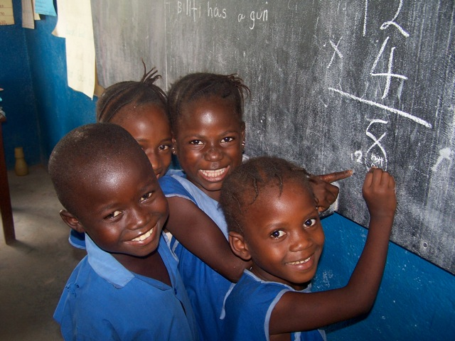
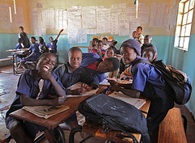
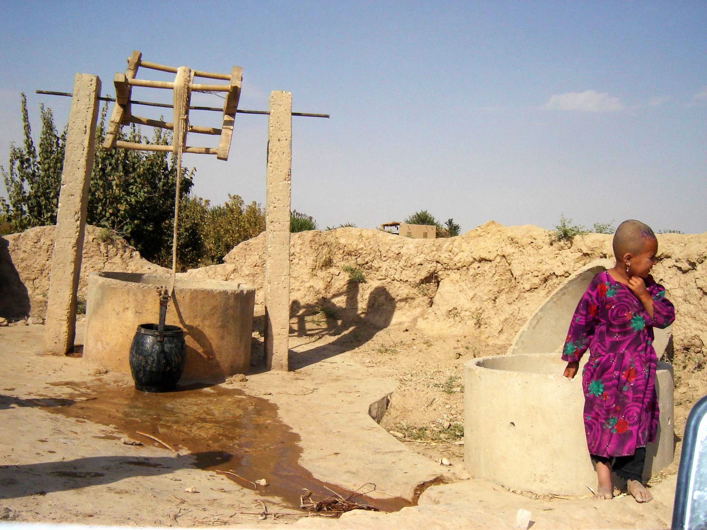
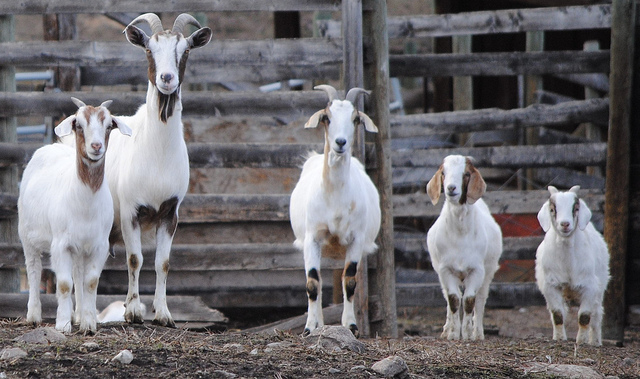
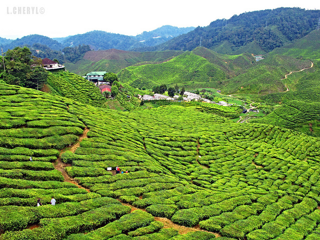

| The Adopt A Village program is the program that we are working with in order to help build a school for youth to attend. It consists of five pillars which work together in order to help children achieve all that they are capable of. |  |
The five pillars are:
Education | Clean Water & Sanitation| Health
Alternative Income | Agriculture and Food Security
Education

| For every year children are in school, their future income is raised by approximately 10%. With the education pillar, the goal is to build proper schools and classrooms in order to give children an appropriate environment to learn. Not only are schools built, but the program works to ensure that what they are doing remains long-term. This means that they do not simply go to countries and build schools. They work with the community and government in order to ensure that they are able to provide children for many generations to come with a proper education that will allow them to go on and do great things in the future. |
Clean Water & Sanitation

While giving children the opportunity to attend school, it was shown that most of the students were male. Females are typically given the role of doing household chores. This includes walking for hours and hours in order to fetch water from wells that are miles and miles from their house. By building wells with clean water, girls would not have this responsibility anymore and they would be able to attend school. |
Health

In order for a community to be strong and help support children receiving an education, its members must be physically strong as well. Adopt A Village works in direct correlation with the government to identify the most harmful diseases and focus their efforts to reduce the number of people affected by these illnesses. Not only is health important to members of the community, but also the children. 9.2 million children under the age of 5 die every year. The majority of these deaths could be prevented with some simple medical treatments that are not costly. |
Alternative Income

Many kids are unable to attend schools as they are required to stay at home and help their parents make an income to buy food and other necessities. Adopt A Village works with parents, specifically mothers, to help them be capable of sustaining themselves. The Alternative Income and Livelihood sends parents to workshops and training sessions to teach them valuable ways of creating an income. Not only do they do these workshops, but they also help them get started on becoming independent. This year, Free The Children is focusing on the Year of Empowerment. Read here for more information on what that is. |
Agriculture and Food Security

One of the most pressing issues in developing countries is food security. Food security is the availability and access to enough nutritious food to help sustain the body. Without enough food, it is extraordinarily difficult for children to find the energy to go to school and actively participate in classroom discussions. Free The Children works with PotashCorp to help with this pillar. PotashCorp focuses on farming techniques and water management programs to make sure that communities have enough food and water to self-sustain. |